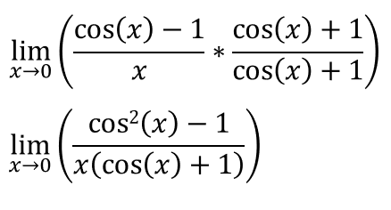
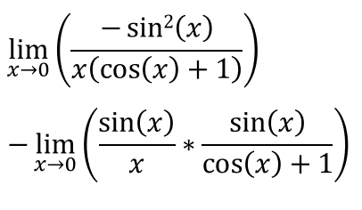
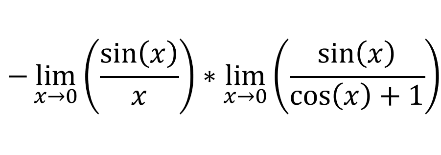
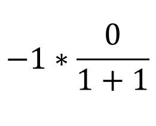

We want to prove that [limx->0 (cos(x)-1)/x = 0], which can be written as:
Since [cos2(x) + sin2(x) = 1], we can write:
We can then use the product law:
We know that [limx->0 sin(x)/x= 1], if you don't then click here. Evaluating the limits give us:
Which we know is equal to 0. Therefore [limx->0 (cos(x)-1)/x = 0].